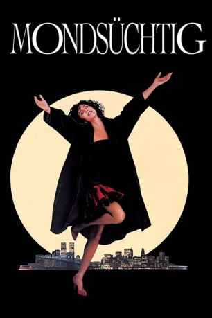

Auszeichnungen: 3 Oscars gewonnen für 3 Oscars nominiert 2 GoldenGlobes gewonnen
 gesehen am 30.06.2015
gesehen am 30.06.2015Alternativ: Moonstruck
Auszeichnungen: 3 Oscars gewonnen für 3 Oscars nominiert 2 GoldenGlobes gewonnen gesehen am 30.06.2015
 
 IMDB-Wertung: 7.1 / 10
IMDB-Wertung: 7.1 / 10  Metascore:
Metascore: 
Für Loretta, die verwitwete Tochter einer italienisch-amerikanischen Familie in New York, steht fest: Sie wird eine Vernunftehe mit Johnny eingehen. Als dieser nach Sizilien muß, um noch einmal seine todkranke Mutter zu besuchen, lernt sie seinen Bruder Ronny kennen. Unter dem magischen Schein des Vollmondes beginnen romantische Verwirrungen.
Jahr: 1987
Dauer: 102 Minuten
FSK: 12
Land: USA Studio: MGMTonspuren: DD2.0 - ,
Untertitel:
Auflösung: 720p (1280x696) Größe: 3645 MB
Regisseur:  Norman Jewison
Norman Jewison
Drehbuch: John Patrick Shanley
Soundtrack: Dick Hyman
Darsteller:
 Cher als Loretta Castorini
Cher als Loretta Castorini Nicolas Cage als Ronny Cammareri
Nicolas Cage als Ronny Cammareri Vincent Gardenia als Cosmo Castorini
Vincent Gardenia als Cosmo Castorini Olympia Dukakis als Rose Castorini
Olympia Dukakis als Rose Castorini Danny Aiello als Mr. Johnny Cammareri
Danny Aiello als Mr. Johnny Cammareri John Mahoney als Perry
John Mahoney als Perry Leonardo Cimino als Felix
Leonardo Cimino als Felix Joe Grifasi als Shy Waiter
Joe Grifasi als Shy Waiter Robin Bartlett als Barbara
Robin Bartlett als Barbara Amy Aquino als Bonnie
Amy Aquino als Bonnie Catherine Scorsese als Customer at Bakery
Catherine Scorsese als Customer at Bakery David Hummel als Opera Patron , uncredited
David Hummel als Opera Patron , uncredited Peter Austin Noto als Opera Patron , uncredited
Peter Austin Noto als Opera Patron , uncredited Feodor Chaliapin Jr. als Old Man
Feodor Chaliapin Jr. als Old Man Helen Hanft als Lotte
Helen Hanft als LotteDatei: X:\1987\Mondsüchtig (1987, FSK12, 1280x696).mkv seit 30.06.2015
Festplatte: HD 1987-1991
 Es gibt insgesamt 50 Filme in der Gruppe '1987'
Es gibt insgesamt 50 Filme in der Gruppe '1987'